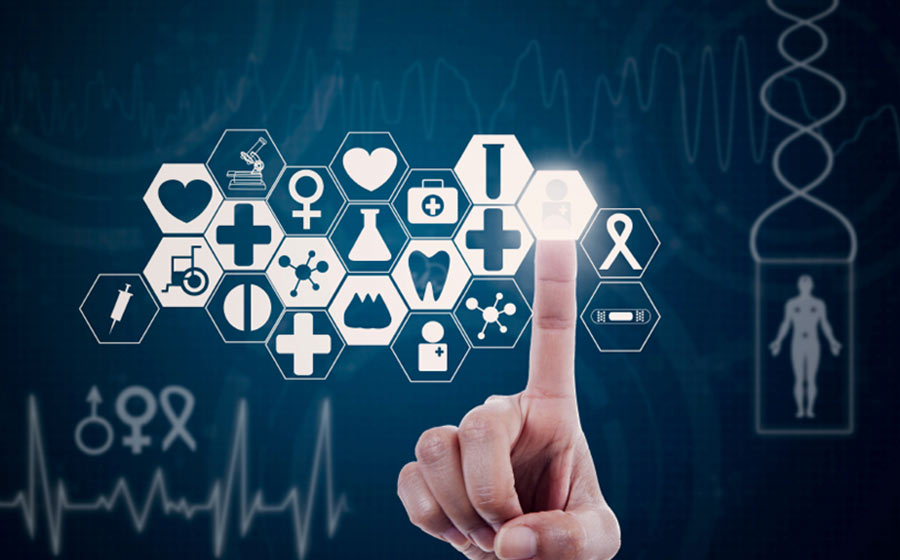

Influência da tecnologia na saúde

Melhoria do atendimento
Os recursos tecnológicos disponíveis podem melhorar o atendimento aos pacientes das clínicas desde o momento da recepção até o pós-consulta. Com um sistema informatizado e capacitação de pessoal esse ciclo será eficiente em toda a sua dimensão, pois os dados coletados na recepção serão armazenados e acessados pelos profissionais antes da realização de qualquer procedimento e, consequentemente, não serão solicitados novamente. Mediante esse fato, os profissionais clínicos terão como rastrear as atividades realizadas junto ao paciente e, caso ele apresente alguma reação indesejável, isso será sanado mais rapidamente se comparado ao prontuário manuscrito. Além disso, com o software adequado será possível utilizar o atendimento online para facilitar as marcações e o paciente terá a liberdade de agendar a consulta em qualquer horário do dia ou da noite, todos os dias da semana. Os benefícios gerenciais também serão evidenciados, pois a equipe administrativa terá mais tempo e, com isso, aumentará a sua produtividade, sem afetar a qualidade do atendimento presencial.
Benefícios na assistência clínica
A tecnologia em saúde é essencial, pois atua em todas as vertentes do processo de cuidado ao paciente. Com essa ferramenta é possível melhorar o diagnóstico, a terapêutica, a prevenção e proporcionar mais conforto ou redução dos processos dolorosos. Isso porque com o uso de equipamentos mais modernos consegue-se identificar nuances patológicas que antigamente não seriam detectáveis e avaliar alterações laboratoriais em estágios iniciais. Também é possível intervir precocemente com estratégias terapêuticas menos invasivas, mais específicas e mais seguras, melhorando o prognóstico clínico e a qualidade de vida do paciente. Dessa forma, é possível iniciar o tratamento precocemente, recuperando a saúde do paciente de forma mais rápida e com menos complicações clínicas, além de evitar a implantação de intervenções desatualizadas. A prevenção é outro ponto que foi beneficiado com o advento da tecnologia na área de saúde. Com os recursos disponíveis atualmente é possível fazer um rastreamento patológico conforme a faixa etária e os hábitos de vida do paciente.
Otimização dos serviços clínicos
A tecnologia na área da saúde trouxe consigo a telemedicina, prática que aproxima profissionais clínicos e pacientes que estão distantes geograficamente e necessitam de serviços específicos. Por meio da telemedicina é possível enviar exames de imagem na rede, em alta definição, e compartilhá-los com outros profissionais de saúde. Assim, o médico poderá encaminhar o exame para um especialista na área e discutir com ele um possível diagnóstico, descartando de imediato outras possibilidades. Também é possível solicitar pareceres clínicos de especialistas por meio de videoconferência e acompanhar o caso clínico de pacientes com doenças complexas ou de difícil controle mediante as consultas de telemedicina. A otimização, nesse caso, está na redução do tempo para executar tarefas que antigamente eram manuscritas e, consequentemente, aumentar o número de atendimentos e procedimentos que refletem em benefícios financeiros.
Aumento da eficiência nos processos
Você está em outra cidade ou estado e precisa checar os exames de determinado paciente ou, então, o paciente já fez o exame, mas está nas mãos de outro médico. Da forma tradicional, você pediria para o paciente buscar o exame e voltar ao consultório ou teria de esperar chegar ao local para analisá-los. Com o uso de tecnologia específica isso não será mais necessário, pois os profissionais clínicos não perderão tempo. Já é possível que tanto os profissionais de saúde quanto os pacientes solicitem resultados dos mais diversos tipos de exames pela internet, de qualquer lugar, a qualquer momento e de forma segura. Ademais, para os processos gerenciais, o controle do faturamento dos procedimentos, das consultas realizadas, da demanda não atendida e dos prejuízos financeiros agregados a processos ineficientes também serão levantados. Dessa forma, os gestores conseguirão traçar o diagnóstico situacional da empresa, elaborarão metas em curto, médio e longo prazo e avaliarão as condutas implantadas mediante a análise dos indicadores.
Monitorização de parâmetros clínicos
As ferramentas tecnológicas também facilitaram enormemente a monitorização dos parâmetros clínicos. Por meio de softwares ou aplicativos, os pacientes podem avaliar sinais e sintomas que são críticos, principalmente para as doenças crônicas. Exemplo disso são os aplicativos que detectam anormalidades na glicemia por meio de dispositivos subcutâneos, relógios inteligentes que monitoram a pressão arterial e outros que monitoram sinais específicos. Existem diversos aplicativos que conseguem evitar o agravamento de problemas de saúde. Por exemplo, há um tipo de marca-passo que é monitorado 24 horas por dia, 7 dias por semana. Ele atua na prevenção de arritmias cardíacas e também consegue fazer o registro detalhado da atividade do coração em questão. Também estão disponíveis relógios inteligentes que mensuram a pressão arterial, nível de saturação sanguínea e batimentos cardíacos, oferecendo esses dados periodicamente ou conforme a demanda médica. Alguns dispositivos podem ser controlados via telefone celular e enviados para os profissionais que transmitirão as orientações pertinentes ao caso clínico em questão. Essas estratégias permitem maior controle das doenças crônicas e enviam anormalidades clínicas em tempo real para os médicos que acompanham os pacientes de forma a solucionar o problema via mensagens instantâneas ou encaminhamento a serviços de urgência. Investir em tecnologia na área da saúde é uma tarefa essencial. Primeiro pelos benefícios que traz para a assistência clínicas em relação ao diagnóstico, terapêutica e prevenção de complicações no paciente. Em seguida, verifica-se o levantamento de indicadores necessários à sustentabilidade de uma empresa além da monitoração dos parâmetros do paciente, principalmente naqueles portadores de doenças crônicas.